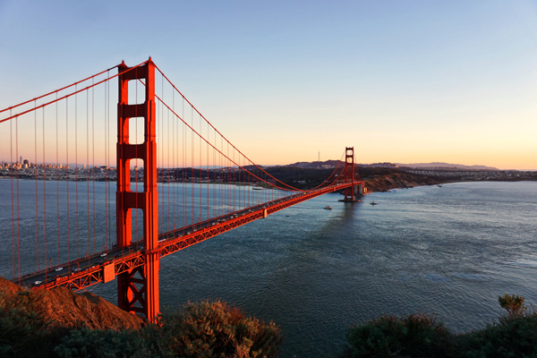
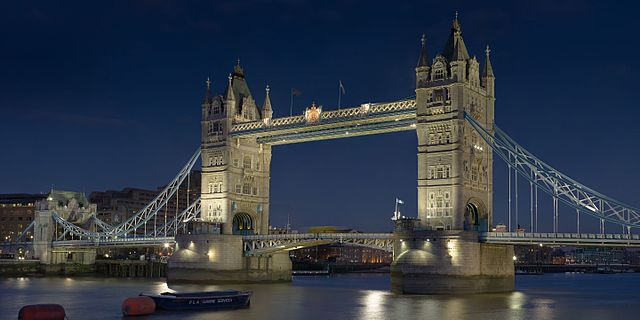

Bridges
Bridges are beautiful works of architectural construction. In addition to letting us cross water, they represent art, engineering, and history. Bridges around the world are famous for these features. Check out the pages to learn more!
Golden Gate Bridge
The Golden Gate Bridge is in San Francisco, California. Despite rumors, the bridge is not a golden color nor named after the Gold Rush. It was actually named after the Golden Gate Strait, the stretch of water below the bridge. The Golden Gate Bridge was the longest suspension bridge in the world until 1964.

Image by Joonyeop Baek on Unsplash, Unsplash License
Tower Bridge
Tower Bridge is a landmark in London and sits on the river Thames. It took 8 years and 432 construction workers to build the bridge. Tower Bridge has a high level walkway that allows people to walk above the cars, and 40,000 people cross the bridge everyday.

Image by Diliff from Wikimedia Commons, CC BY-SA 3.0
Charles Bridge
The Charles Bridge is a gothic structure built during the medieval times in Prague. It crosses the Vltava River and was the most important connection between the Prague Castle and the city's Old Town. The bridge is not built for cars to cross, so artists and musicians can be found playing along its edges.

Image by Lachlan Gowen from Unsplash, Unsplash License
Golden Bridge
Golden Bridge is a bridge in Vietnam that was built just a few years ago. It is part of a resort and it goes over cliffs, not water. It goes from a cable car to the gardens, but it's also nice to walk just for the view. The most special thing about it is how it's held up, by two giant concrete hands.

Image by Trung Le from Wikimedia Commons, CC-BY-SA